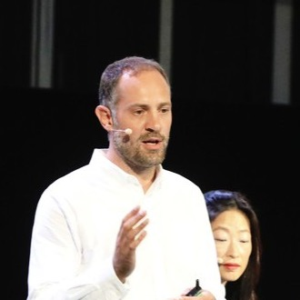
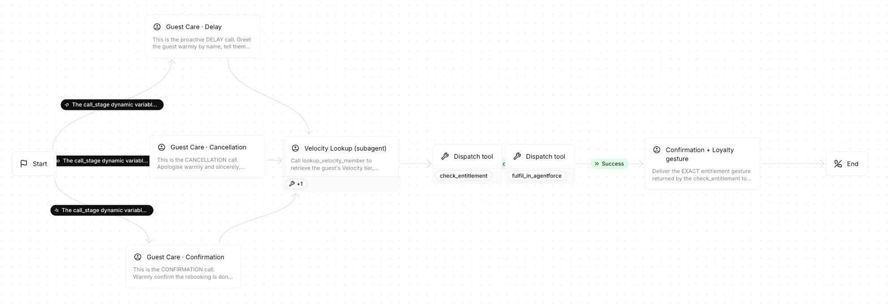
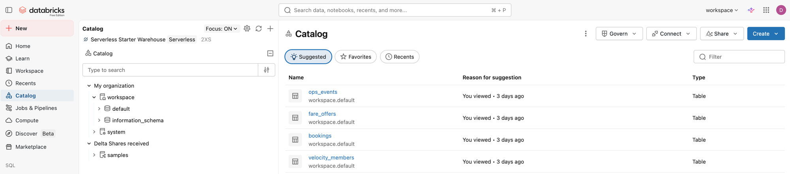
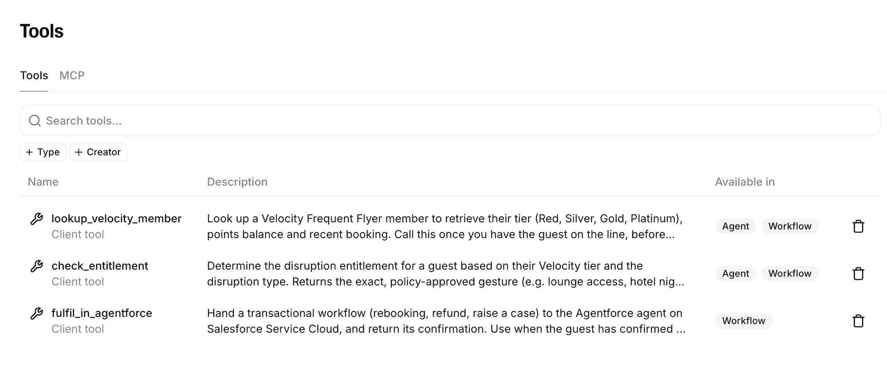

There was a time when someone actually picked up.
Bring on Wonderful.
The voice layer the world's leading products already run on.
ElevenLabs is an AI research lab and product company building the most realistic voices in the world, and the full conversational-AI platform on top of them. Not a feature bolted onto something else. Voice is the whole company.
Trusted in production by Revolut, Klarna, Deutsche Telekom, Cisco and a long list of Fortune 500s. headline figures to re-verify on the day
Loyalty is won or lost in the moments that go wrong.
What we heard
- Velocity is the crown jewel. 13m+ members, ~28% EBIT margin, 80+ partners. Protecting that relationship is everything.
- You lead the domestic market and you're newly ASX-listed, so the board is focused on real returns.
- You're already moving on AI. Designers hired, Databricks for your data, OpenAI for trip planning. The data and chat layers are being claimed.
- Disruption is where it hurts. Delays, cancellations and refunds are the moments members remember for the wrong reasons.
What we'd love to confirm
- The deadline that's coming. The Aviation Consumer Protection Bill (2026), with automatic refunds and tiered delay compensation, could triple complaint volumes. Is that on your radar, and when does it land?
- The number that matters most to you - cost to serve, containment, CSAT, or the regulatory load coming.
- How a decision like this gets made, and the path from a pilot to going live.
- What has to be true on experience, latency, security and fit with the systems you already run.
Some of this is our read from the first conversation. Pull us up wherever it's off. figures to re-verify on the day
Press 1 for frustration.
This is what we're here to solve.
audio is ElevenLabs TTS; the screen is illustrative
ElevenLabs can automate a lot of inbound traffic - and what that means for Virgin Australia.
- Disruptions voice handlesdelays, cancellations, missed connections
- Refunds & compensation voice handles“where's my money?”
- Changes voice handlesdates, names, seats, upgrades
- Velocity voice handlespoints, tiers, redemptions
- Check-in & boarding assistsday-of-travel friction
- Baggage assistsstatus today; claims need systems work
Every routine call the voice agent answers is one your contact centre no longer pays to staff, at a fraction of today's cost to serve.
Freed from the queue, your people focus on the calls that genuinely need a human: a distressed family rebooking after a cancellation, a complex Velocity redemption, a complaint that needs real care.
When the repetitive load lifts, the role gets materially better, so experienced agents stay. Retention keeps hard-won knowledge in the building, and seasoned staff lift NPS.
As AI takes on more over time, you can retrain the team, moving them from a pure cost line into revenue: proactive care, upsell and cross-sell.
Meet Hannah.
- She tells you she's a virtual assistant. No pretending - disclosure builds trust.
- She verifies who she's talking to before sharing any booking detail.
- She knows the guest's Velocity tier and tailors the call to it.
- She only offers what she's allowed to. Benefits come from a rules engine, not the model's imagination.
A warm Australian voice on ElevenLabs, on a fast model for natural turn-taking. This is a real conversation - talk back to her. If anything misbehaves on the day, there's a fallback with pre-recorded calls.
Before the demo, meet your member. This one's me.

I'm flying Melbourne to Sydney this morning, and I'm busy. Laptop open, between meetings, half-listening to the gate announcements.
- My flight just got disrupted. A push notification, a vague apology, no clear next step.
- I don't want to download anything, dig through a help centre, or sit in a phone queue listening to hold music.
- I want to say what's wrong, in my own words, and have it sorted - while I keep working.
- I'm a Gold member. I'd like to be treated like the airline already knows me.
That's the moment loyalty is won or lost. Watch what happens when a real voice agent picks it up. Djordje = George, the anglicised form - either is fine on the day
A proactive traveller experience - one disruption, handled end to end.
- TriggerOps event
VA838 is delayed, then cancelled.
simulated - Call 1The delay
Hannah calls Djordje, checks his ID, sends a lounge pass.
live voice - Call 2Cancellation + rebooking
A warm apology, options, and a new flight sorted on the call. Djordje hangs up.
live voice - AutoWhatsApp confirmation
The new flight + hotel land automatically, with a real Salesforce case behind it.
auto
One disruption, handled end to end.
- Disruption
- Call 1 · Delay
- Call 2 · Rebooking
- Confirmed
-
1
Reads the memberDatabricksGOLDDjordje Gvozdenovic 82,450 pts · VA838 · MEL→SYD · tonight
-
2
Acts in SalesforceService Cloudwaiting for the rebooking…
-
3
Confirms on WhatsAppchannel hop
What just happened - and what was real.
- TriggerDisruption fired
VA838 delayed, then cancelled - Virgin reached out first.
- Looked upDatabricks
Djordje's Velocity tier and booking, pulled with a real live query.
live - DecidedEntitlement tool
The lounge and hotel gesture came from a rules engine, not the model's guess.
- ConfirmedWhatsApp
After the call, the new flight + hotel landed automatically in writing.
- ActionedSalesforce
The rebooking became a real Service Cloud case, owned in Salesforce.
live
Two live integrations, one natural conversation. The voice orchestrated; your systems did the work. We go a level deeper next.
ElevenLabs orchestrates every system.



Real: the voice agent, the Databricks read (live SQL) and the Salesforce case (live OAuth). Synthetic: the member data and the ops trigger. A secure proxy holds every credential, so the voice agent never touches a secret. Databricks read + Salesforce act are live; data is synthetic
One voice layer, two ways in - the same Genesys → ElevenLabs → your systems pattern.
This isn't a science experiment. It's in production.
We operate at scale across regions and languages. Logos marked comparable are industry references, not ElevenLabs customers, and we flag them honestly.
Let's use your numbers, not ours.
Defaults are estimates, not Virgin figures. One honest caveat: as deflection climbs, fixed costs don't fall in a straight line, so we'd track this against CSAT by bucket and a 72-hour repeat-contact rate. We'll plug your real numbers in during discovery.
Voice is the one layer too important to hand to whatever your stack ships by default.
Hyperscalers
Google, Amazon, Azure. Cheap to bundle and fine for an IVR, but the voice is generic and the experience is commoditised. Run Gemini, GPT, Claude or an open model like Qwen as the brain inside ElevenLabs and you keep the model choice while getting the better voice.
Salesforce / Agentforce Voice
The natural incumbent here, with deep CRM actions and now MCP. We don't compete with that, we sit inside it: ElevenLabs runs the conversation and the latency, Salesforce runs the transaction. You get both.
CX specialists
PolyAI, Cresta, Sierra, Decagon. Genuinely strong on containment and journey design, but most run as managed services at higher latency. We're faster (~75 ms), self-serve, model-agnostic, and the voice sounds materially better.
What backs it up
Top of independent text-to-speech (TTS) blind-test rankings. ~75 ms latency. A cloned, branded Virgin voice down the track. SOC 2 Type II, ISO 27001, HIPAA, GDPR, EU data residency, zero retention. Live today at Revolut, Klarna and Deutsche Telekom.
For Tom: model-agnostic, evaluable and secure, so the AI org keeps control of the brain. For Sarah: the voice your members come to associate with Virgin. Voice quality alone won't resolve an issue, that takes journey design, good knowledge and a graceful handoff to your people. But the voice itself is the part you don't outsource.
Win one journey first. Then scale it across Virgin.
The first win
A focused 6-8 week paid pilot on the journey that hurts most: disruption and rebooking for Velocity members.
- Measured on containment, CSAT and cost-to-serve
- Scoped with our Solutions Engineer on Sabre & Velocity
- Low risk to launch, high impact fast
Then the expansion
The same voice layer scales well beyond consumer support:
- Velocity loyalty servicing
- Corporate & business travel
- Cargo & freight booking and tracking
- Charter & regional (resources sector)
- Holidays & packages, trade & agents
- UsTailored ROI
your numbers in the model + a pilot scope
- YouSecurity & data review
intro us to your team; SOC 2 / residency pack
- TogetherPick the journey
agree the one disruption flow for the pilot
- DateSE deep-dive
Solutions Engineer scopes Sabre / Velocity / Genesys
Bring on Wonderful.
Thank you, Sarah and Tom. Let's give every Virgin guest the warmth of that operator who always picked up - at the scale of a modern airline.